The Auric Suite
A master collection of four mathematically pure luxury marks presented on high-contrast liquid metallic silk substrates. Engineered for instant subconscious recognition.
The Four Emblems
Tactile specimens engineered for horology crowns, sovereign emblems, and digital avant-garde hardware.
Vesica Star
Interlocking lenticular rings with central floating 4-pointed astroid sparkle.

Triple Wave
3×2 modular rhythm with 144px radius quarter-circle tangent arch cuts.

Inscribed Diamond
Outer square, 45° diamond, and 40% concentric center square with axis channels.

Radial Chevron
17-fold radial symmetry (21.18° intervals) of sharp centripetal chevron wedges.
The 3-Step Logo Stress Test Suite
Real-time diagnostic verification matrix proving cognitive silhouette dominance, rapid mental recall, and 16px micro-scale legibility.
Gaussian Blur Test
Validates that the silhouette dominates subconscious memory even when fine lines blur into high-frequency diffraction.
5-Second Recall Test
Measures mental imprint. Unfamiliar viewers can sketch the single visual hook accurately after a 5-second flash exposure.
16px Favicon Scalability
Verifies optical stroke balance at smartwatch notification and browser tab dimensions without muddy gray clumping.
Optical Clarity Score: 98.4% at 16×16px grid. Zero anti-aliasing color bleed.
Brand Identity System
Horological lockup, tactile packaging foil, and typography specifications.